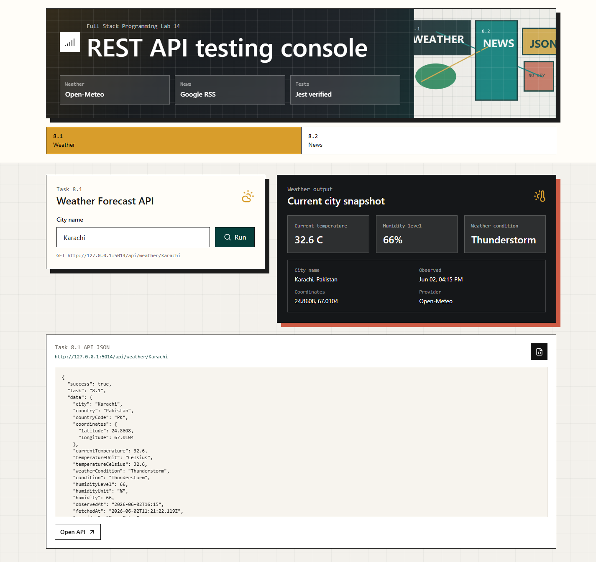
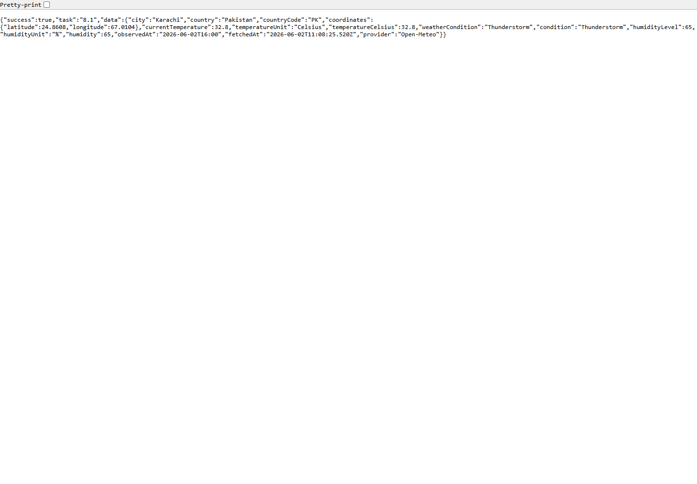
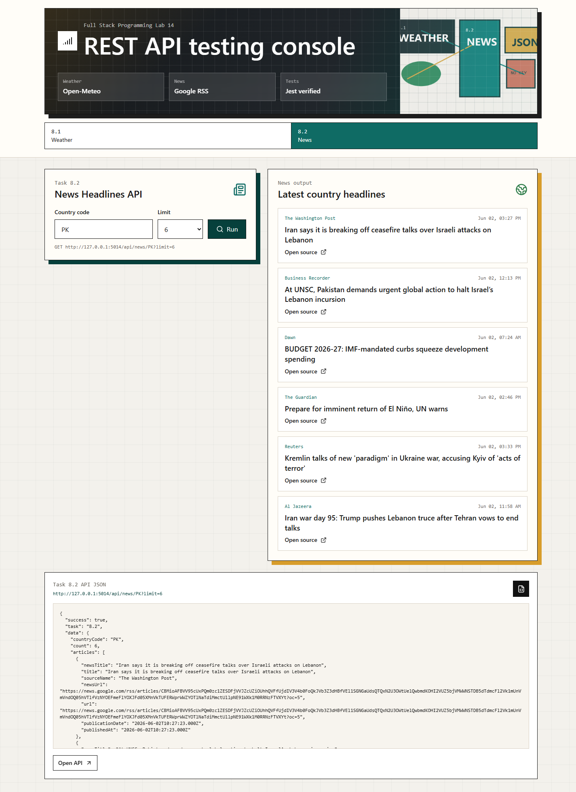
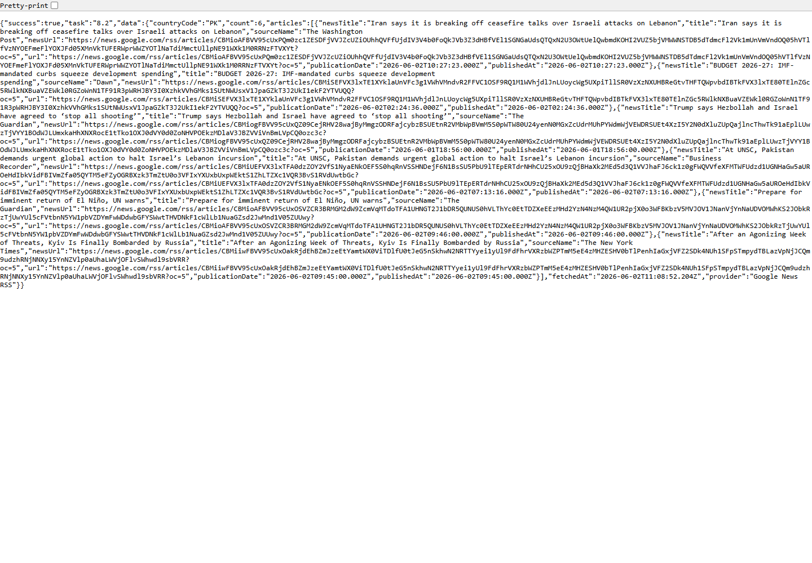
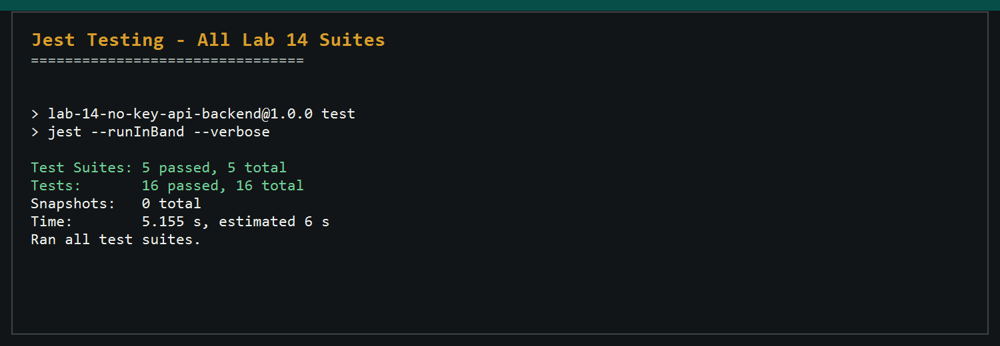
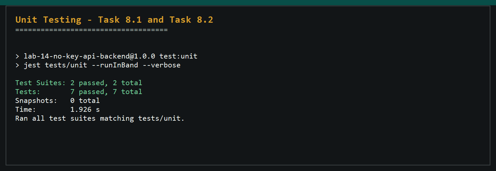
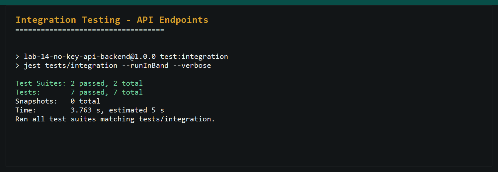
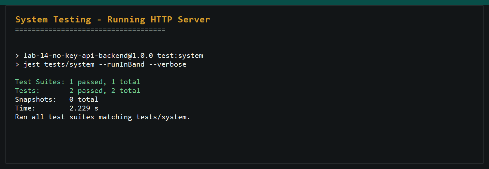
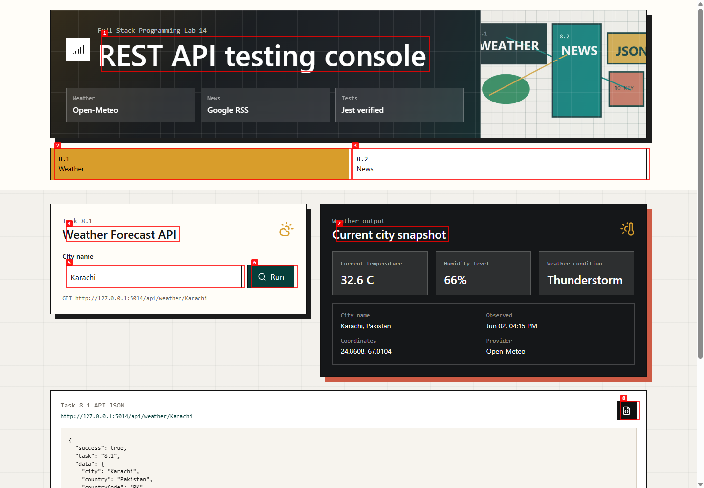
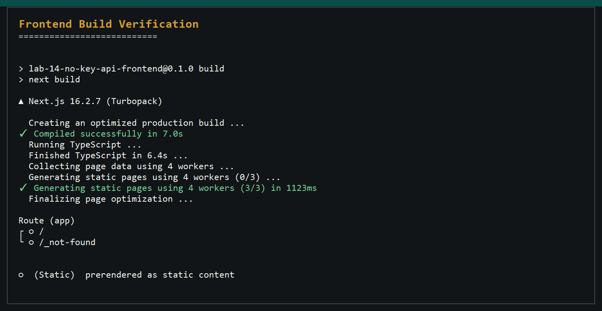

Full Stack Programming Lab 14
API RESTful Deployment and Testing Lab
Student: M Abdullah | Registration ID: 232052
Implementation Summary
Task 8.1 and Task 8.2 are implemented as a no-key REST API system using Express.js. Weather data comes from Open-Meteo, and country headlines come from Google News RSS converted into structured JSON.
GET /api/weather/:cityreturns city name, current temperature, weather condition, and humidity level.GET /api/news/:countryCode?limit=6returns 5-10 headlines with title, source, URL, and publication date.- Invalid inputs and provider failures return structured error JSON.
- Jest unit, integration, and system tests are included.
Task Screenshots
Task 8.1 Weather UI

Task 8.1 Weather API JSON

Task 8.2 News UI

Task 8.2 News API JSON

Testing Evidence
Jest All Test Suites

Unit Tests

Integration Tests

System Tests

Browser Testing

Frontend Build

GitHub Repository URL
https://github.com/abdullahfawadd/Full-stack-programming-lab